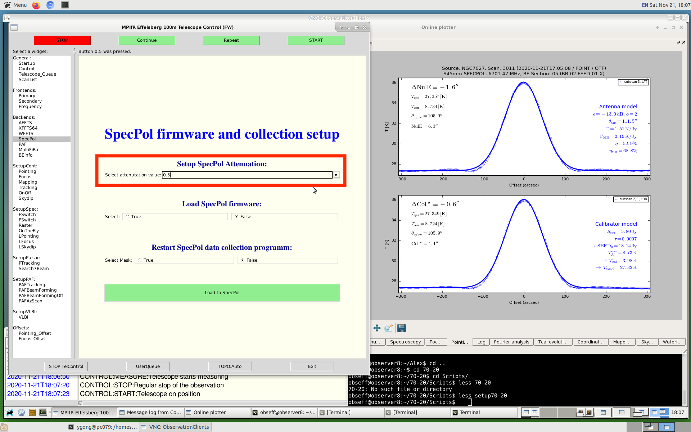
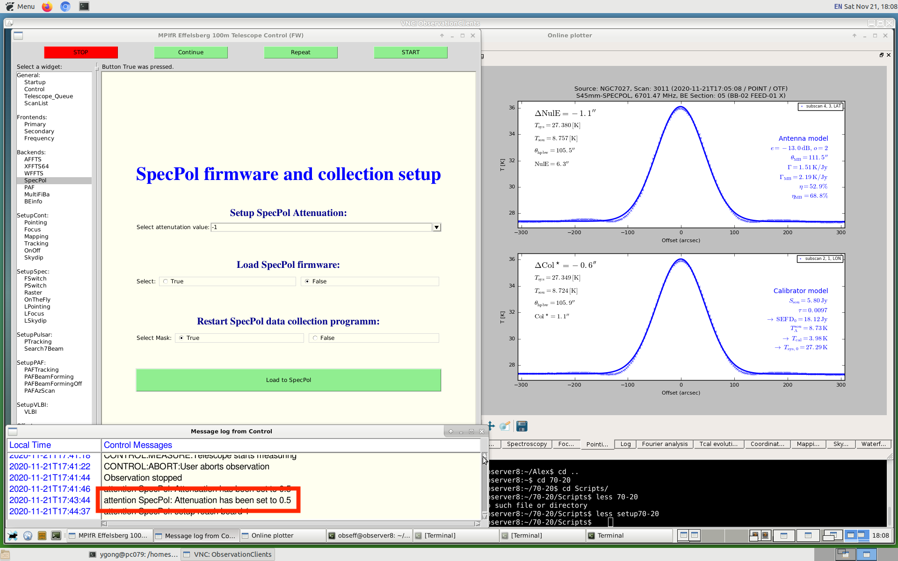
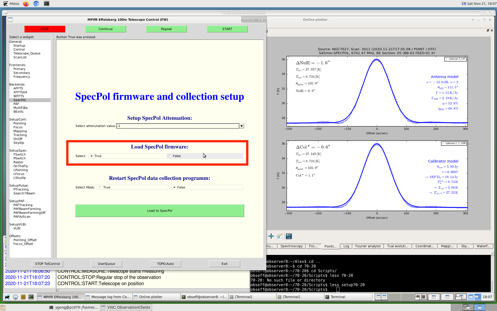
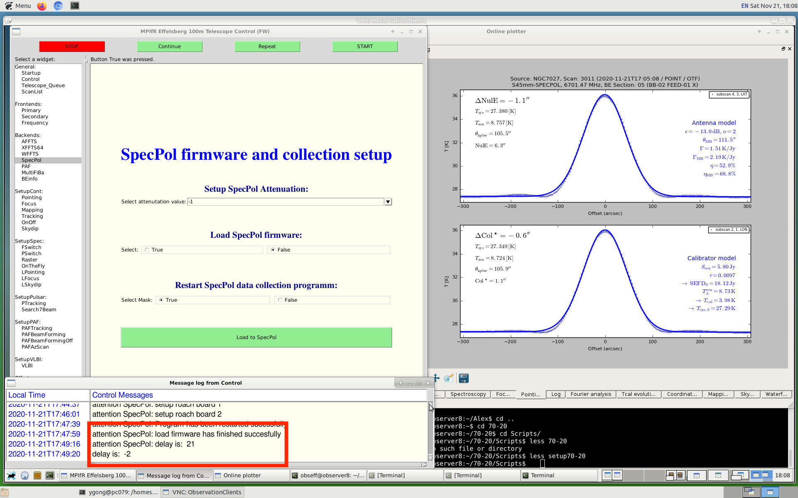
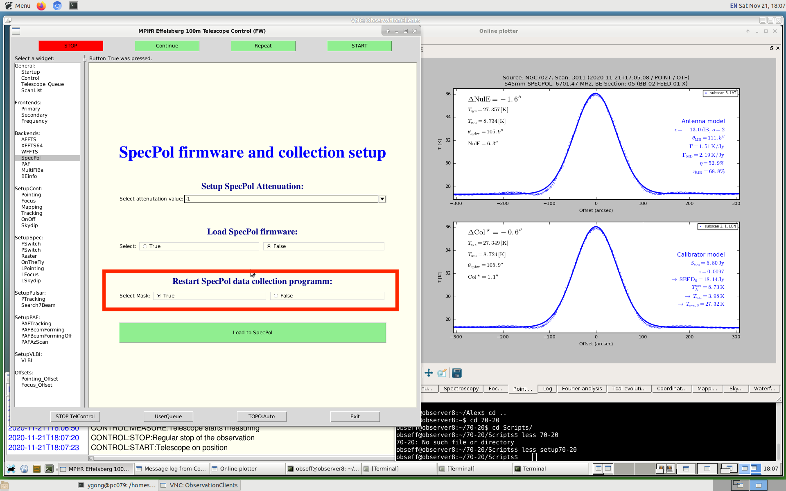
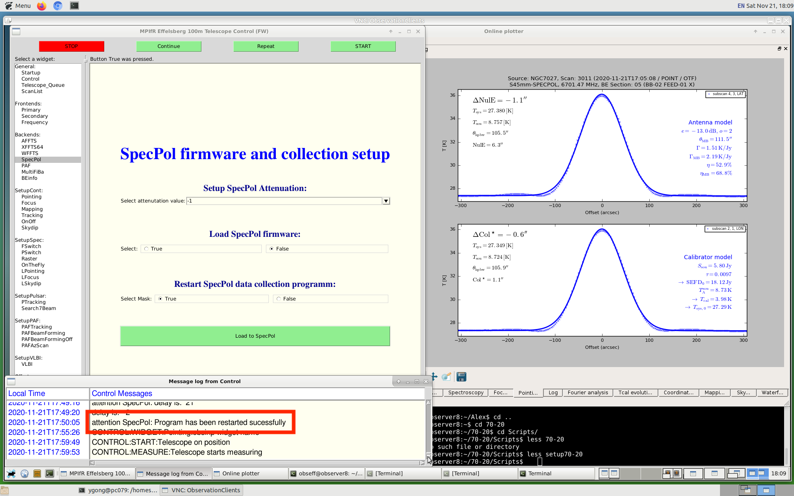
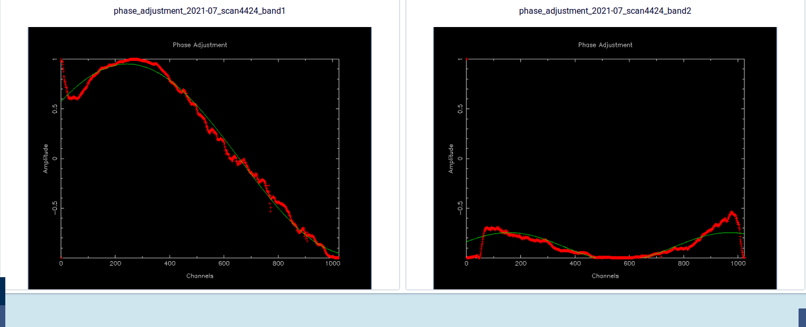
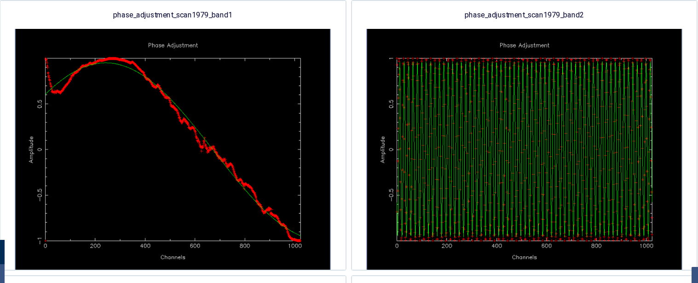

This is an introduction to show how the SpecPol is set up in Effelsberg-100 m. First of all, we have to set up SpecPol before loading the receiver. Then, we go to (click) the SpecPol section in obsinp. Secondly, we set the attenuation for SpecPol. We use a normal value of 0.5 for GLOSTAR observations (For pulsar observations, one may choose a different values.). See the highlight text in the figure below as an example. We set the first row to "0.5", and keep the other rows to be "False". Then, we click the "load to SpecPol" button.

Wait for about one second, and we will see the message "attenuation SpecPol: Attenuation has been set to 0.5" in [Message log from the control]. This suggests that you are successful. See the highlight text in the figure below as an example.

Thirdly, we will use the "loadfirmware" script to adjust the phase delay to allow the broadband polarimetric observations. We will use "True" in the second row, and keep the first row to be "-1" and the third row to be "False". Then, we click the "load to SpecPol" button. See the highlight text in the figure below as an example.

WAIT for a few minutes (do not load other tasks, or this task may fail.), we will see the delay numbers for the two bands, and get a message "attenuation SpecPol: load firmware has finished successfully" in [Message log from the control]. This suggests that SpecPol has been successfully configured. See the highlight text in the figure below as an example.

Fourthly, we will use the SpecPol data collection program to monitor the SpecPol's behavior. We will use "True" in the third row, and keep the first row to be "-1" and the second row to be "False". Then, we click the "load to SpecPol" button. See the highlight text in the figure below as an example.

Wait for a few seconds, we will get a message "attenuation SpecPol: Programs have been restarted successfully" in [Message log from the control]. This suggests that the data collection program has been restarted. See the highlight text in the figure below as an example.

It would be good to check the phase shifts after the first pointing. This could indicate if SPECPOL is working properly. The examples for the good and bad results are shown below (From M. Rugel):
An example for the good phase shift:

An example for the bad phase shift:

In case of the bad phase shift, one should ask operator/station manager/senior people for suggestions before continuing observations.